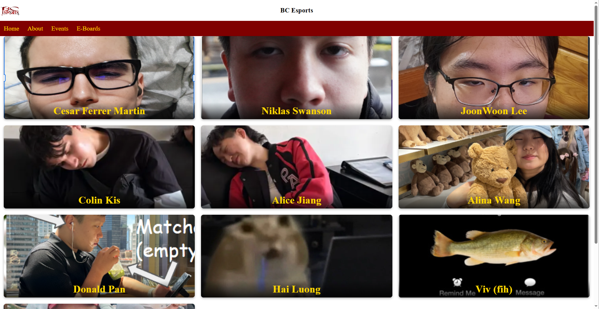

BC Esports Website
A prototype website created to introduce the Esports Club of Boston College and its executive board.
Project Overview
The Esports Club of Boston College is a student organization that brings gamers together to discuss video games, participate in tournaments, and build connections. I developed a prototype website to introduce the club to a wider audience and provide a foundation for sharing future events and updates.
Tools and Technologies
- HTML5
- CSS3
Features and Development
- Created a prototype website to improve the online presence of the Esports Club of Boston College.
- Created three HTML pages connected through a navigation bar for easy browsing.
- Used a shared CSS stylesheet to maintain consistent colors, fonts, and layouts across the website.
- Designed an executive board gallery displaying member photographs and names in a three-column layout.
- Organized the website to introduce the club, highlight its members, and provide space for future events and announcements.
Project Images

Results
- Independently developed the website prototype using HTML and CSS.
- Designed the website's navigation, layout, and overall visual appearance.
- Created the executive board section to introduce club members through pictures and names.
- Structured the website to support future additions such as events and announcements.